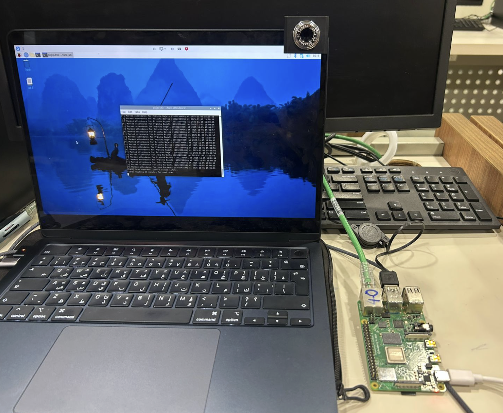
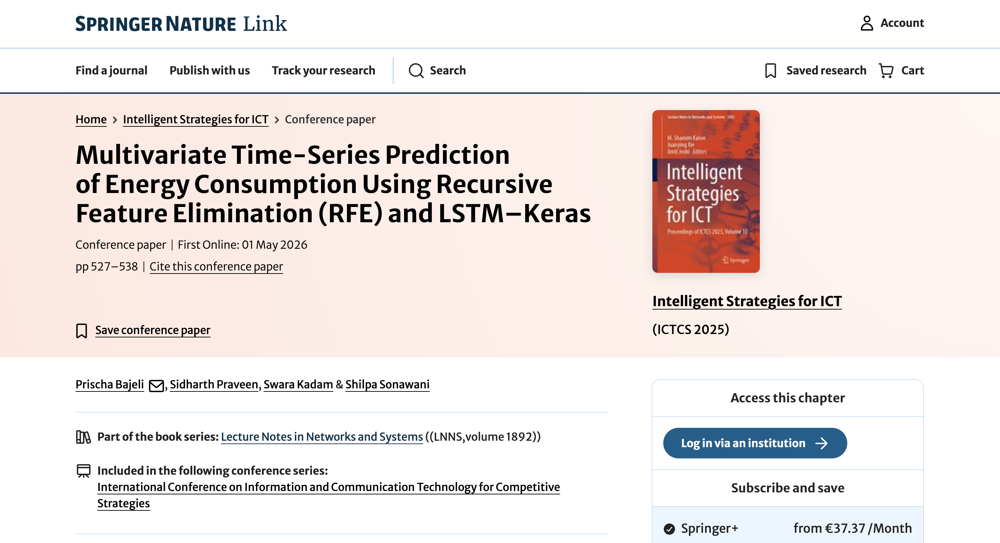
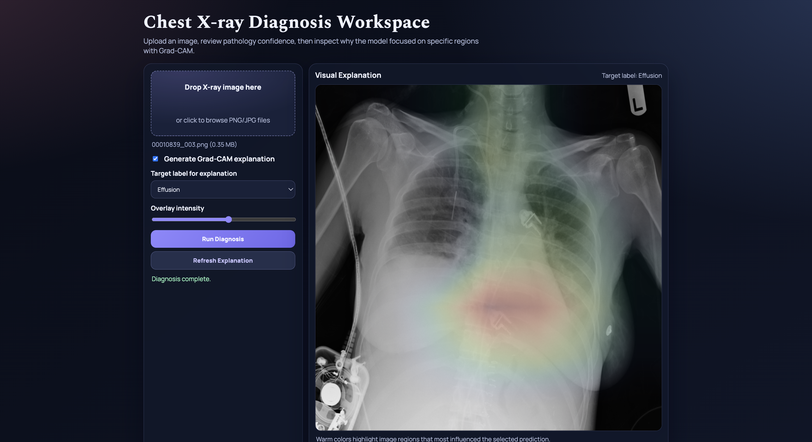
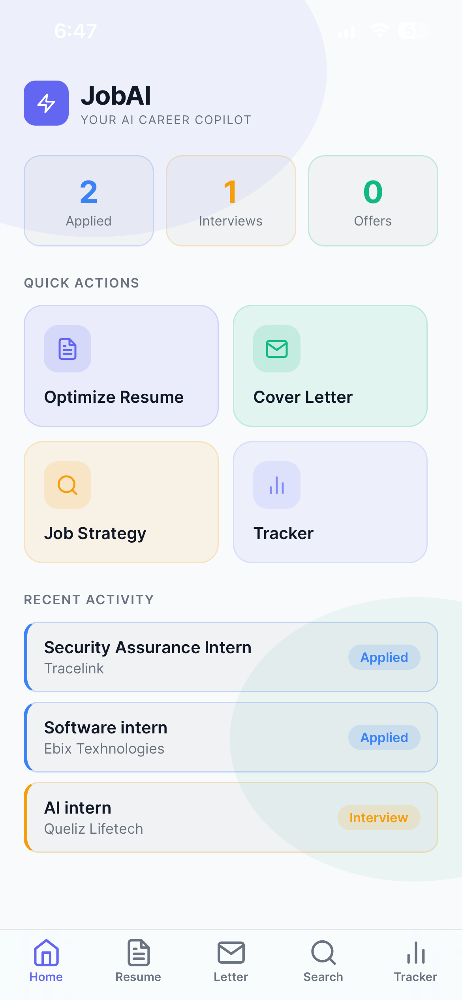
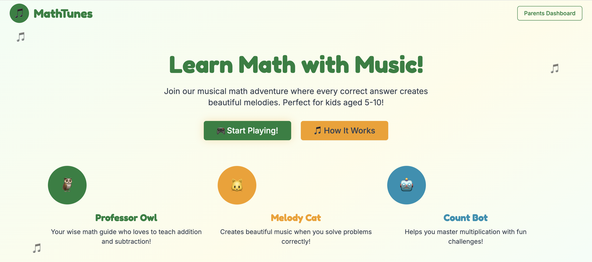

Work
Projects spanning machine learning, IoT, deep learning, and full-stack development — from research papers to deployed applications.

IoT-Enabled Face Recognition Attendance System
An end-to-end LBPH face recognition pipeline on a Raspberry Pi 4 that automates attendance for 50+ students at 95%+ accuracy — cutting per-session logging from ~5 minutes to zero manual input.

Multivariate Time-Series Energy Consumption Prediction
An RFE-LSTM forecasting pipeline on the UCI Household Electric Power Consumption dataset (35K hourly samples). An ablation study identified lag features (1–3) as key signals, reducing MAE/RMSE by up to 7% versus the no-lag baseline — built for real-time smart-grid energy management.

Explainable AI for Chest X-Ray Diagnosis
A multi-label DenseNet121 classifier on the NIH ChestX-ray14 dataset (112K images, 14 labels) reaching 0.83 macro-AUC with patient-level stratification to avoid leakage. Deployed via a FastAPI endpoint with a Grad-CAM web UI so non-technical users can visualize predictions.

JobAI — Your AI Career Copilot
An AI-powered mobile app that helps users optimize resumes for ATS compatibility, generate tailored cover letters, plan job-search strategy, draft cold outreach emails, and track applications across Applied, Interview, Offer, and Rejected stages.

Educational Math Game for Children (Ages 5–10)
An interactive math learning site with musical feedback designed to improve engagement and retention for young learners. Built around UX principles, with documented purpose, novelty, user flow, and feature sequencing.
University Club Dashboard — Multi-Club Management System
A database-linked admin dashboard that centralizes management of multiple university clubs — Acting, Music, Coding, and Robotics. Provides unified views for club details, budgets, activities, and competitions through a single interface for administrators.